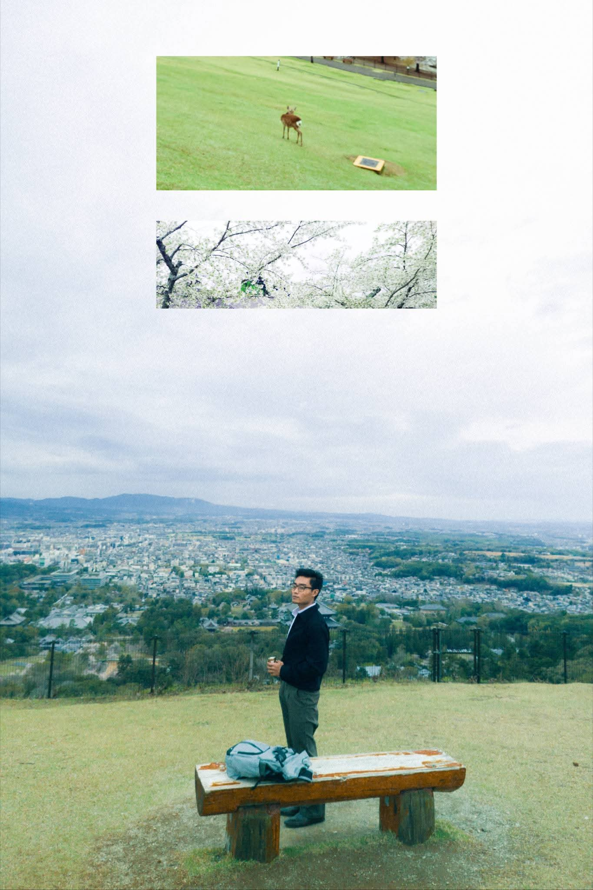

Nay Yaung is a student photographer based in Myanmar, dedicated to capturing the raw beauty of everyday life. The name means Sunlight, representing the fundamental element of every photograph.
This collection showcases the contrast between the historic architecture of pagodas and the peaceful nature of Pyin Oo Lwin.